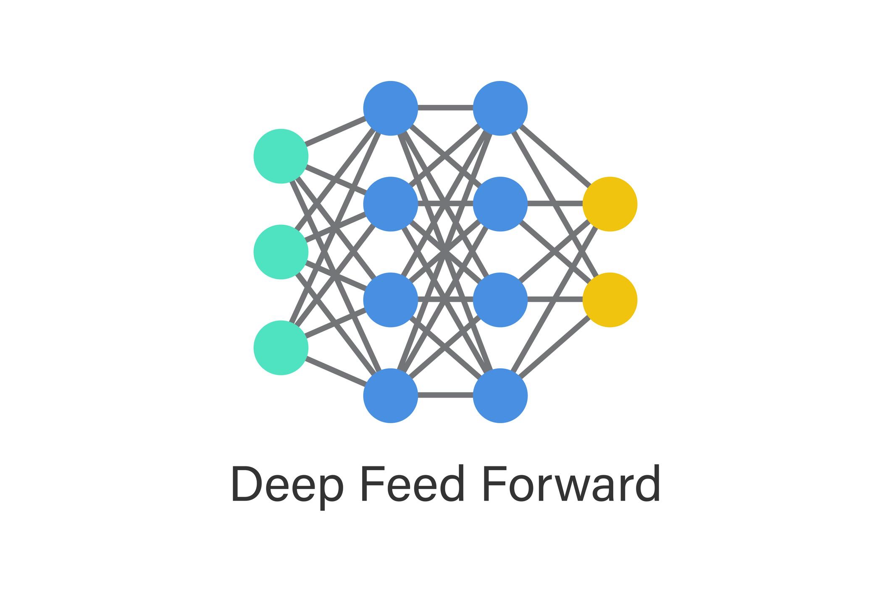
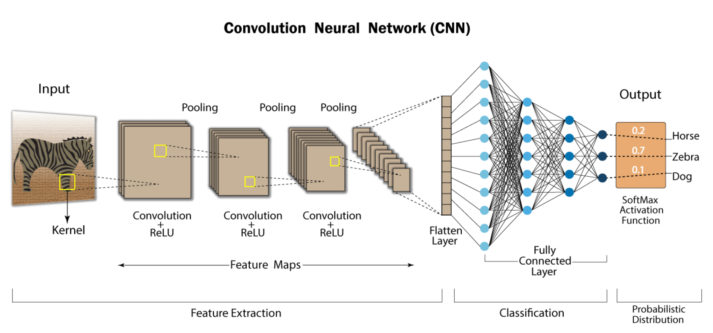

一、什么是 FNN？
FNN (Feedforward Neural Network, 前馈神经网络)，也常被称为
Fully Connected Network、Dense Neural Network 或 MLP（Multi-Layer Perceptron）。

特点：
- 每一层的每个神经元都和下一层所有神经元连接
- 数据从左往右单向传播
- 不存在“局部连接”
- 不共享参数
数学本质：
每一层的变换可以写成：
y = f(Wx + b)
即：矩阵乘法 + 激活函数。
二、什么是 CNN？
CNN (Convolutional Neural Network, 卷积神经网络) 最初为图像处理设计。

核心区别：
| FNN |
CNN |
| 全连接 |
局部连接 |
| 参数多 |
参数少 |
| 不考虑空间结构 |
保留空间结构 |
| 适合 tabular 数据 |
适合图像 |
关键结构：
- Convolution layer（卷积层）
- Kernel / Filter（卷积核）
- Pooling（池化）
- 参数共享
CNN 通过“局部像素相关性”提取空间结构信息。
三、FNN vs CNN 本质区别
一句话总结：
- FNN 把图片当成一串数字
- CNN 把图片当成有空间结构的数据
举例：一个 28×28 的图片，
FNN 会将其拉平成 784 维向量，而 CNN 会保留 28×28 的二维结构。
这导致：
- FNN 在图像任务上效果一般
- CNN 在图像任务上表现更优
四、什么是 Inference（推理/预测）？
机器学习通常分为两个阶段：
-
Training（训练）：用数据、计算 loss、反向传播并更新参数。
-
Inference（推理）：不更新参数，只做前向传播，输出预测结果。
比如：
- 用 MNIST 训练模型 → Training
- 用训练好的模型预测新手写数字 → Inference
公式视角：
- Training = forward + backward
- Inference = forward only
在工业场景中：训练通常只做一次，而推理可能会被调用数十亿次。
五、什么是 Tabular 数据？
Tabular 指表格型数据（如 Excel）。每列为一个特征（feature），每行为一个样本（sample），
特征之间没有空间关系。
示例表格：
| age |
income |
height |
gender |
| 25 |
50000 |
170 |
0 |
| 30 |
80000 |
180 |
1 |
特点：
- 每列为一个特征（feature）
- 每行为一个样本（sample）
- 特征间没有空间关系
- 列与列之间仅有“逻辑关系”，无“位置关系”
常见场景：
六、什么是图像数据？
图像不是表格，而是有空间结构的二维/三维张量。比如 28×28 的灰度图，
可以表示为 X ∈ ℝ28×28。
关键区别：
- 每个像素与周围像素强相关
- 上下左右位置有意义
- 平移图片不应改变内容本质
七、本质区别：结构性
-
Tabular 数据：特征无序。即使交换 income 和 height 的列顺序，只要权重对应调整，
模型不会变，没有“空间邻接”概念。
-
图像数据：像素有位置关系。随机打乱像素，CNN 的效果会崩溃。
图像关键信息在于局部模式和空间结构。
八、模型选择
为什么 FNN 更适合 Tabular？
- FNN 的假设：各特征独立输入，没有局部关系，不共享参数。
- 这与 tabular 数据的结构高度匹配。
为什么 CNN 更适合图像？
- CNN 做局部卷积和参数共享，并具有平移不变性。
- 例如边缘检测，一个 filter 可以在图像的任意位置复用。
九、简要总结
- Tabular：特征是抽象属性，无空间含义。
- Image：特征是像素，空间结构本身就是关键信息。